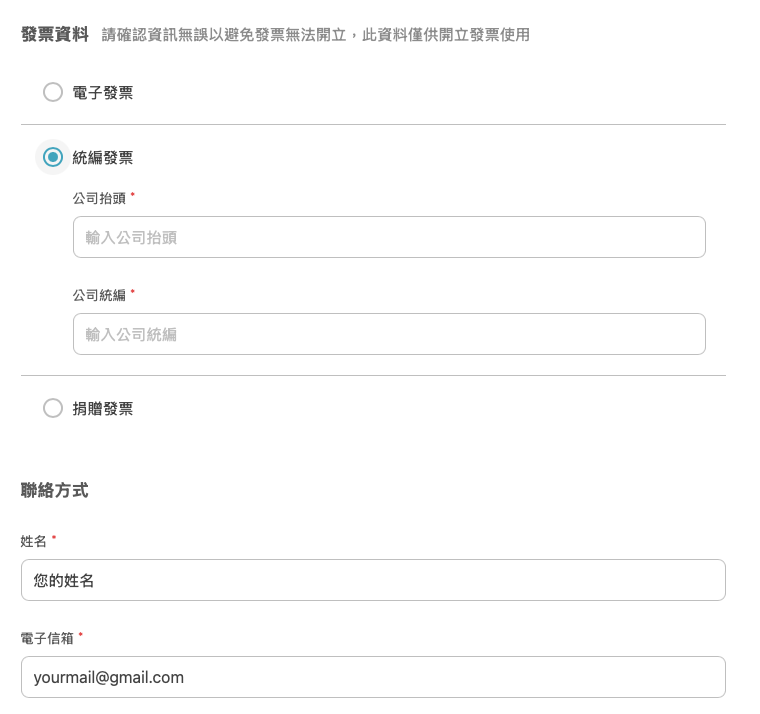
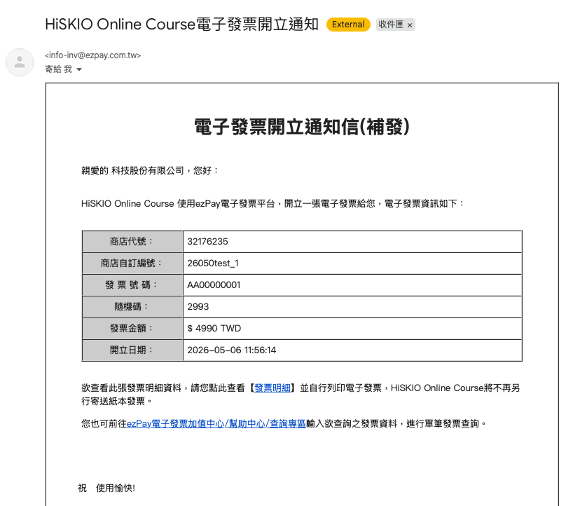
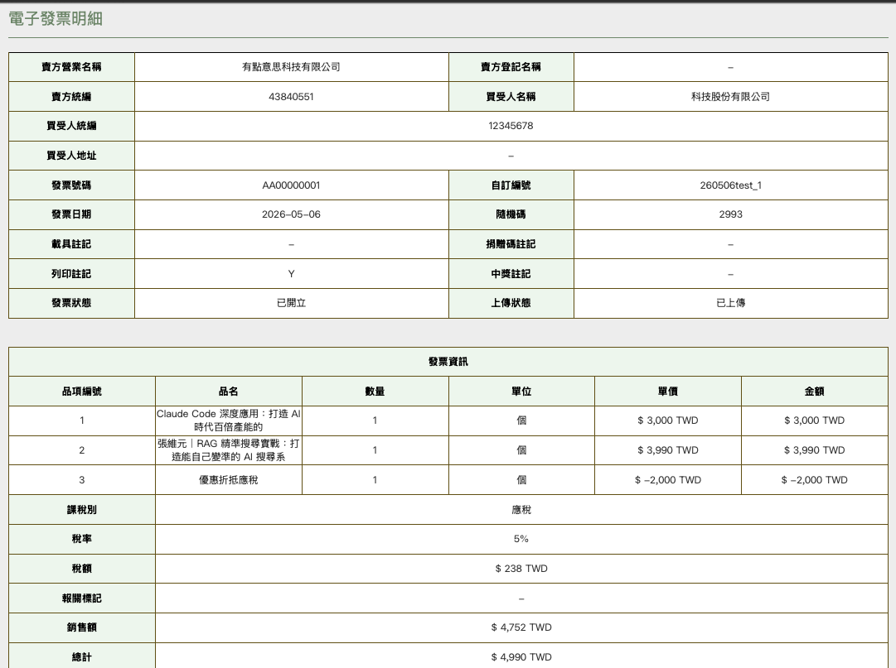

本篇專為公司／單位報帳需求設計，說明 HiSKIO 統編發票如何申請、會收到什麼樣的發票，以及如何用於報帳。
💡 一般電子發票（無統編）的說明請參考 關於電子發票。
為什麼選統編發票？
公司報帳通常需要打統一編號，沒選統編發票多數公司會無法報帳。
建議你先閱讀本篇並與貴司 HR／會計確認後再購買，避免事後無法報帳的困擾。
企業採購的建議做法
若是公司要為員工購買課程，建議直接使用要上課的職員帳戶循下方流程購買並填寫統編。一方面更符合實際使用需求（職員可直接登入學習），一方面也符合大多數公司的報帳作業。
若一次需大批採購、且金額超過 30 萬元，請來信 hiskio@hiskio.com 與我們接洽。
怎麼申請
於購買時於結帳頁面選擇「統編發票」，並填寫：
- 公司抬頭（須與營業登記名稱一致）
- 統一編號
- 收件 Email（電子發票寄送地址）

⚠️ 發票一經開立恕不接受換開。請於購買時就確認三項資訊皆正確，再送出訂單。
你會拿到什麼
完成結帳後，你會收到：
- 購買成功通知
- 電子發票信件
電子發票信件如下：

查看發票明細
點擊信件中的【發票明細】按鈕，即可進入明細頁面查看完整資訊：

明細頁面包含：
- 公司抬頭、統一編號
- 課程清單（買幾堂列幾堂）
- 各課程小計與總金額
- 發票開立日期、發票號碼
若同學報帳時需要填寫 HiSKIO 公司資訊，可參考 公司登記資料。
如何用於報帳
- 將電子發票信件或明細頁截圖／列印，作為會計憑證附在請款單上
- 部分公司會接受電子檔直接附件，視貴司會計流程而定
- 若會計需要紙本，可列印明細頁
購買時忘了選統編發票／輸入時打錯統編怎麼辦？
建議的處理方式：請至【訂單紀錄】申請退費至「我的錢包」，退費完成後再重新購買、購買時記得選統編發票並填寫正確資訊。透過錢包重新購買可立即到帳，不需等銀行作業。
退費與我的錢包說明請參考：
若操作上遇到問題
請聯繫客服 support@hiskio.com，並備妥以下資訊以利處理：
- 訂單編號（例：260401test）
- 原發票號碼
- 公司抬頭（與營業登記一致）
- 統一編號
- 收件 Email
仍無法解決？
請聯繫客服並提供：
- 註冊時使用的 Email
- 訂單編號
- 你的需求
更新時間： 07/05/2026